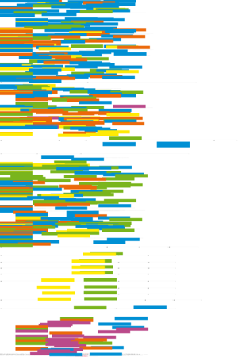
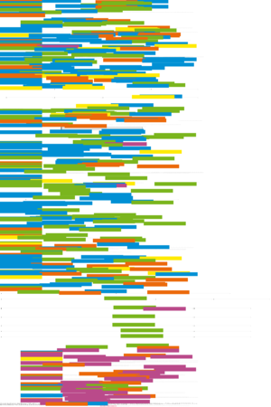
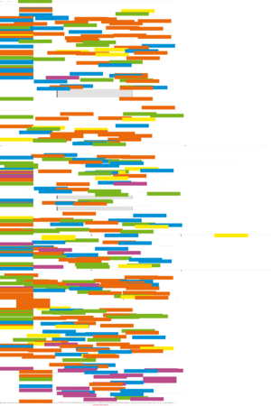
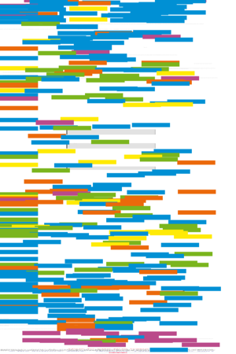
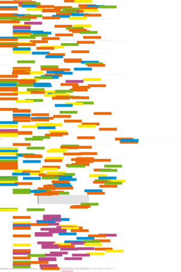
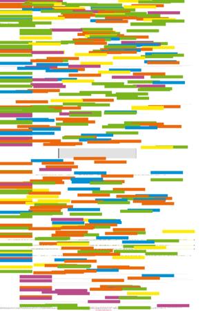

| About IR |
| Editors |
| Author instructions |
| Copyright |
| Author index |
| Subject index |
| Search |
| Reviews |
| Register |
| Home |

Volume 7 No 2 January 2002
ISSN 1368-1613
If you find Information Research useful, please sign in and we'll notify you of future issues. |
Contents
General Editorial
Special Issue on Cross-lingual Information Retrieval Research at the University of Tampere, Finland
 CLIR Research at the University of Tampere: issue Editorial
CLIR Research at the University of Tampere: issue Editorial
Targeted s-gram matching: a novel n-gram matching technique for cross- and mono-lingual word form variants, by Ari Pirkola, Heikki Keskustalo, Erkka Leppänen, Antti-Pekka Känsälä and Kalervo Järvelin
The RATF formula (Kwok's formula): exploiting average term frequency in cross-language retrieval, by Ari Pirkola,
Erkka Leppänen and Kalervo Järvelin
Compounds in dictionary-based cross-language information retrieval, by Turid Hedlund
Additional Refereed Papers
Studying digital library users over time: a follow-up survey of Early Canadiana Online, by Joan M. Cherry and Wendy M. Duff, Faculty of Information Studies, University of Toronto, Toronto, Canada
Critical realism and information systems research: why bother with philosophy?, by Philip J. Dobson, School of Management Information Systems, Edith Cowan University, Churchlands, Western Australia
Task based design of a digital work environment (DWE) for an academic community, by Narayanan Meyyappan, Suliman Al-Hawamdeh and Schubert Foo, Division of Information Studies, Nanyang Technological University, Singapore
 Abstracts in Spanish/Resúmenes en Español
Abstracts in Spanish/Resúmenes en Español
Reviews
Laura J. Gurak, Cyberliteracy: navigating the Internet with awareness. New Haven, CT: Yale University Press, 2001
Jodeph Feller & Brian Fitzgerald Understanding open source software development. London: Addison-Wesley, 2002.
Elane Svenonius, The intellectual foundation of information organisation. London : MIT Press, 2000.
James Dearnley and John Feather The wired world. An introduction to the theory and practice of the information society. London: Library Association Publishing, 2001
Anders Hektor. What's the use? Internet and information behaviour in everyday life. Linköping: Linkoping University, Tema. 2001.
Ronald E. Rice, Maureen M. McCreadie & Shan-Ju L. Chang, Accessing and browsing information and communication. Cambridge, MA: MIT Press, 2001.
Calls for papers
Fourth International Conference on Information Needs, Seeking and Use in Different Context - ISIC2002
Call for Papers: "Knowledge Management and the Emperor's New Clothes" - a special issue of Information Research
What's in the free e-journals?
Other links
Check the other resources available at InformationR.net - free resources for information researchers.
Information Research: an international electronic journal, is published four times a year by Professor Tom Wilson of the Department of Information Studies, University of Sheffield in association with | |
Nanyang Technological University, Singapore |
University of Tampere, Finland |
University of Murcia, Spain | |
Pennsylvania State University, USA |
University of Vilnius, Lithuania |
Design and Editorial content © T.D. Wilson 1996-2002